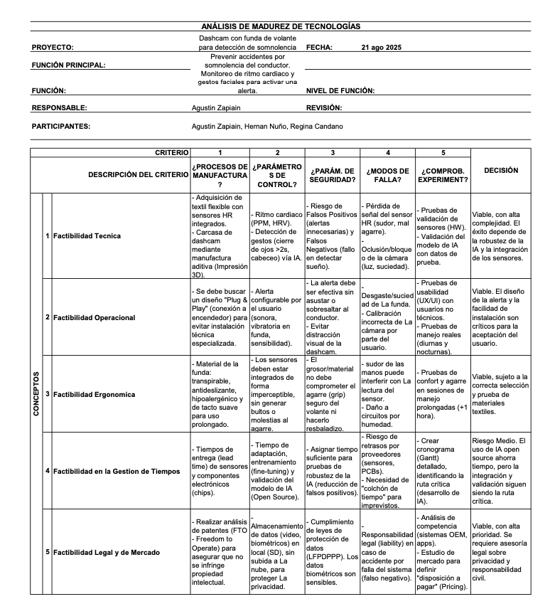
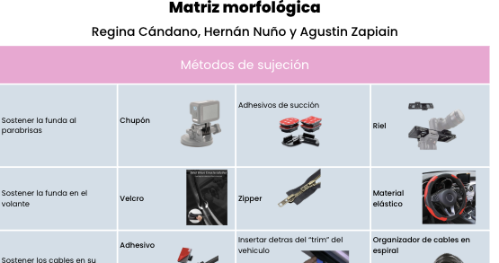
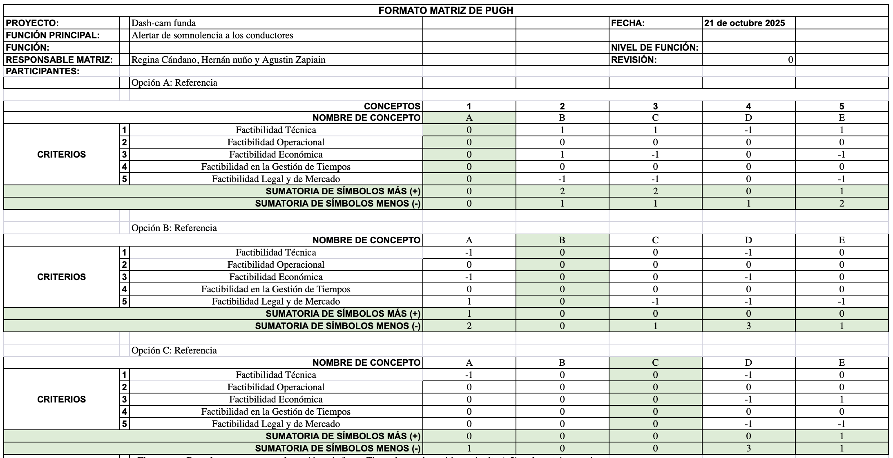
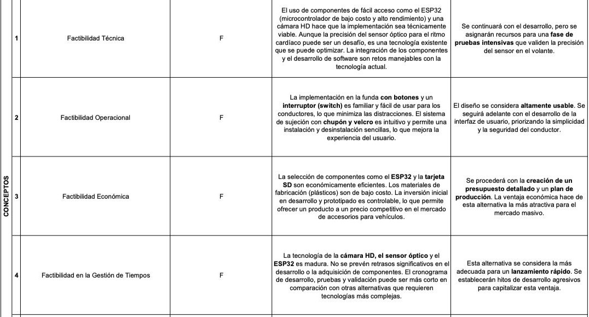
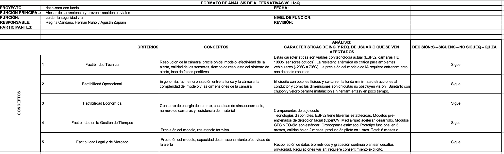
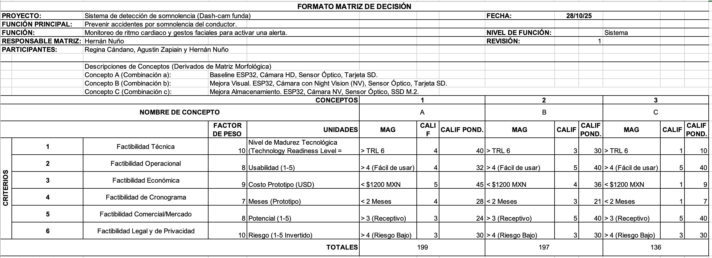

Combinaciones:
A.Chupón | Velcro | Trim del vehículo | Cámara HD | sensor óptico | ESP32 | Cableado | Tarjeta
SD |
Rejas de ventilación | Plásticos (con fibra de carbono) | Pantalla con botones | switch
B.Chupón | Material elástico | Trim del vehículo | Cámara con NV | sensor óptico | ESP32 |
Cableado|
Tarjeta SD | Malla |Plásticos (con fibra de carbono) | Botones selectores | switch
C.Chupón|Material elástico|Trim del vehículo|Cámara con Nv| sensor óptico|ESP32|Cableado |
Tarjeta
SSD
M.2 |Rejilla|Plásticos (con fibra de carbono)|Botones selectores|switch
D.Riel | Zipper | Organizador de cables | Cámara HD | Módulo AD8232 | Raspberry PI | Bluetooth |
Memoria integrada | ventilador de cámaras | plásticos | pantalla con botones | switches
E.Adhesivos de succión | Material elástico | adhesivo | Cámara HD con NV | sensor óptico | ESP32
|
cableado | memoria integrada M.2 | Reja de ventilación | plásticos con fibra de carbono |
botones
selectores | pantalla táctil

El concepto B es el que se ve que es la opción más fuerte.Tiene el puntaje positivo más alto
(+2) y el puntaje negativo más bajo (0).Esto indica que el Concepto B es superior a la Opción de
referencia en dos criterios y no es inferior en ninguno.
Concepto E es la segunda opción más prometedora.Tiene un puntaje positivo de (+1) y un puntaje
negativo de (-0).Es superior a la
Referencia en un criterio y no es inferior en ninguno.
Concepto A y Concepto D están empatados en la tercera posición.Ambos tienen un puntaje positivo
de ($+1) y un puntaje negativo de (-1).Esto
significa que son mejores en un criterio, pero peores en otro, por lo que su rendimiento neto es
igual al de la Opción de Referencia (1-1=0).
Concepto C es la opción más débil.Tiene un puntaje
positivo de (+1) pero el puntaje negativo más alto (-2).Esto sugiere que aunque tiene una
ventaja en un criterio, sus desventajas son mayores en otros dos.

La Alternativa 1 demostró ser la más factible en casi todos los criterios analizados. El uso de
componentes de bajo costo, como el ESP32 y una cámara HD, no solo hace que el proyecto sea
económicamente viable, sino que también acelera el cronograma de desarrollo. A diferencia de las
otras propuestas, no presenta riesgos técnicos insuperables ni costos excesivos que puedan
comprometer su ejecución.
Aunque se identificó un desafío potencial en la precisión del sensor óptico en el volante y en
el manejo de la privacidad de los datos, estos son problemas controlables y se ha definido una
estrategia para abordarlos: se realizarán pruebas intensivas para validar el sensor y se
implementarán políticas de privacidad transparentes.
En conclusión, este análisis preliminar nos permite tomar una decisión clara: proceder con la
Alternativa 1. Su balance entre costo, tiempo de desarrollo y usabilidad la convierte en la
opción ideal para un prototipo funcional y, potencialmente, para un producto final exitoso en el
mercado.
Este enfoque nos permite mitigar riesgos, optimizar recursos y concentrar nuestros esfuerzos en
una solución que tiene el mayor potencial de éxito.


Consideramos que el proyecto es Factible, pero identificamos una Alta Complejidad Técnica y
Legal que debe ser gestionada.
Técnicamente: Nuestro mayor desafío será desarrollar y entrenar la IA para que sea fiable,
minimizando los falsos positivos (alertas innecesarias) y los falsos negativos (no detectar el
sueño). La integración de los sensores HR en el textil también es un reto clave.
Legalmente: Identificamos un riesgo alto en el manejo de datos biométricos (rostro y ritmo
cardíaco). Debemos priorizar una estrategia de privacidad y asegurarnos de cumplir con las leyes
de protección de datos desde el inicio.
Operacionalmente: Para que el producto sea aceptado, concluimos que debe ser muy cómodo
(ergonómico) y fácil de instalar y usar (alertas no invasivas).
Recomendación Inmediata: Debemos iniciar una consulta legal sobre el manejo de datos y, en
paralelo, comenzar un prototipo (Prueba de Concepto) para validar la fiabilidad de la IA y los
sensores.
Decisión Final: La Alternativa 1 (ESP32 + Cámara HD + Sensores Ópticos) demostró factibilidad en
todos los criterios. El análisis del HoQ confirma que todas las características de ingeniería
son viables técnica y económicamente.

Ganador Ponderado: Concepto A: Base (HD, SD) - 199 Puntos (Seguido muy de cerca por B: 197
Puntos)
Análisis: El resultado es un empate técnico entre el Concepto A (199) y el B (197). El Concepto
C (136) queda descartado. El Criterio 3 (Costo) y 4 (Cronograma) favorecen al Concepto A,
mientras que el Criterio 2 (Operacional) y 5 (Comercial) favorecen al Concepto B.
Fortalezas (A): Máxima factibilidad económica y de cronograma. Es la alternativa más rápida y
barata de prototipar.
Debilidades (A): Menor potencial comercial y operacional. El uso de una Cámara HD estándar la
hace susceptible a fallos por poca luz (modos de falla).
Fortalezas (B): Excelente potencial comercial y operacional. La Cámara con Night Vision (NV)
resuelve el modo de falla por "Oclusión/bloqueo de la cámara (luz)" y es un gran argumento de
venta.
Debilidades (B): Ligero incremento en costo y complejidad técnica/cronograma (integrar la cámara
NV).
Recomendación Final: La decisión es estratégica. El Concepto A (Ganador f1) es la opción de
"mínimo riesgo" y "mínimo costo". El Concepto B es la opción de "mejor producto", ya que
resuelve una debilidad clave (la oscuridad). Dado que la diferencia de puntos (199 vs 197) es
insignificante, se recomienda re-evaluar si el beneficio de mercado de la Cámara NV (Concepto B)
justifica el ligero aumento de costo y tiempo sobre el Concepto A.
